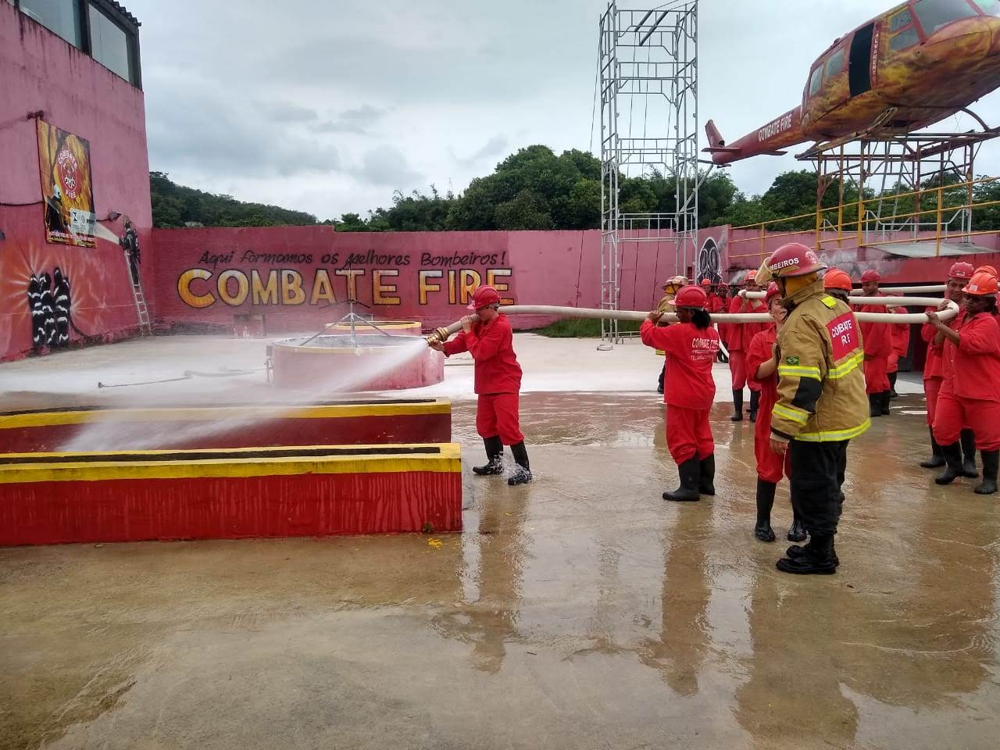

Minhas formações:
- Ensino Superior imcompleto.
- Curso Básico de Bartender
- Curso de Prevenção e Combate a incêndio 
- Actualmente estou-me formando como desembolvedor Full stack com ajuda da startup social TOTI

Nasci na venezuela. Criado numa família de 4 irmãos, pai e mãe. Desde
pequeno gosto muito de futebol. Sou uma pessoa muito paciente, gosto de ajudar as pessoas
considero que sou uma pessoa muito criativa com uma facilidade para me adaptar a qualquer
situação e ambiente, bom ouvinte, respeitoso, bem humorado, solidário e generoso.
Nasci no dia 05 de Dezembro de 1991 na Venezuela. Tive a fortuna de disfrutar minha
infância e adolescência ao máximo na Venezuela até que tive que emigrar ao Brasil pela
crise politíca. Já que minha vida estava em peligro ficou impossível continuar morando lá
morando lá, vendi casa, moto e a maioria de meus pertences.
Cheguei ao Rio de Janeiro no ano de 2016 no mês de Agosto, onde após de 2 meses achei meu
primeiro emprego, aonde estou até agora.
Já se passaram 4 anos, muitas coisas mudaram na minha vida e todo para melhor. Tenho minha
família com saúde e um emprego estável. Agradeço muito a este pais e às pessoas que me abraçaram
como uma família, graças ao apoio dessas pessoas minha história é outra. Não importa quais sejam
os desafios da vida, estou pronto para vencê-las